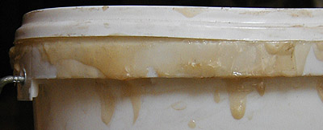

Le
Caparol ®
Comportement sur les surfaces grasses --> lire
passage in liants vinyliques.
Il est chimiquement neutre.
Pur, il est plutôt brillant - disons entre satiné et brillant
- et glissant, sans excès (voir photo ci-dessous : plusieurs couches de liant
pur ont été appliquées par-dessus la couche peinte).
Comme les liants acryliques, il n'est absolument pas réversible.
Son odeur est très discrète et non agressive. Par contre, certaines
personnes réagissent de manière manifestement allergique (très bénigne) en sa présence. Ce
produit contient-il le fameux agent conservateur "isothiazolinone"
(voir toxicité), présent dans d'autres produits de la
même marque ?
Le Caparol ® comme liant à
peindre
Il n'autorise pas les empâtements (craquelures) mais là n'est pas sa
vocation. Pour le situer dans la famille des liants, on peut l'apparenter à
l'aquarelle, dans le sens où il réticule
parallèlement à la surface peinte, protégeant fort bien pigments et surface. La
comparaison s'arrêt là : ce produit ne peut reproduire la délicatesse florale de la gomme
arabique car là n'est pas sa vocation.
Lié en proportion soutenue aux pigments, il est d'un beau satiné. En plus
faible proportion par rapport à l'eau et aux pigments, il devient aussi mat une
fois sec que n'importe quelle peinture à l'eau. Rappelons cependant que les pigments ont
eux-mêmes leur propre brillance (voir brillance in Les pigments,
les couleurs) et qu'il ne s'agit que d'un point de vue très général.
Préparations :
* (facultatif) pour épaissir la pâte (ce qui n'est pas forcément nécessaire), adjoindre entre 20 et 80% de liant
méthylcellulosique, déjà lié avec le pigment. Attention
lorsque vous définissez les dosages en fonction de l'emploi : ce liant
additionnel est réversible.
Plus vous en ajouterez, plus vous rendrez difficile le travail en glacis
superposés, sans parler du risque de fragiliser la peinture.
* ajout classique de 5 à 20% d'eau et même davantage en fait. Le Caparol ® autorise
des jus très dilués, surtout si ce liant est utilisé en forte proportion
par rapport au pigment. Il n'existe en effet pas de médiums pour cette
peinture à notre connaissance, ce qui oblige le peintre à augmenter
légèrement la quantité proportionnelle de liant pour obtenir des
transparences bien solides. En d'autres termes, le Caparol ® peut offrir
des transparences tout à fait extraordinaires à condition de ne pas jouer
que sur l'eau.
* adjonction de pigment. Il est possible de mêler en premier lieu un peu
d'eau au
pigment puis d'incorporer le mélange au liant avant de diluer davantage si
nécessaire. Comme nous l'écrivions ci-dessus, la quantité proportionnelle
de pigment ne doit pas être excessive lorsque le peintre souhaite
travailler en transparence, ce qui est fréquent dès lors que l'on choisit
ce procédé de peinture. Dans ce cas
donc, nous conseillons l'adjonction d'une proportion de pigment largement inférieure à la
normale (qui est en moyenne, très grossièrement, de deux parts de pigments pour une de liant).
Le Caparol ® se vend en pots d'un litre ou de cinq litres.
Selon certains, quelques pigments seraient incompatibles avec ce produit.
Nous les citons avec les réserves d'usage
:
* le bleu de Prusse
* le blanc d'argent
* le jaune de chrome
* le jaune de baryte
* le blanc de zinc
(risque d'épaississement ou d'efflorescence, dit-on).
Seul véritable inconvénient du Caparol ® utilisé comme
liant à peindre : il a une légère tendance à jaunir, nous l'avons constaté.
Notons que c'est un phénomène discret. Nous n'avons détecté ce petit
problème que sur des zones où le liant était présent pur. Après une
première période de jaunissement, le phénomène semble se stabiliser.
L'utilisation du Caparol ® comme colle
a des limites. S'il est bien capable d'incruster des objets très légers dans
un tableau, il joue assez mal le rôle de colle à maroufler - ce pour quoi il
n'a pas été créé. Pour cette opération comme pour tout collage d'objets un
peu massifs, il faut lui préférer une vraie colle polyvinylique, voire
polyacrylique (lire l'article sur les colles) ou bien
certains liants acryliques.
L'utilisation du Caparol
® comme enduit est très répandue et présente de nombreux
avantages.
A ce sujet, lire Enduits et apprêts.
Un conseil
utile
Allez savoir pourquoi, certaines mycoses et bactéries se délectent de l'acétate de
vinyle (tout comme de l'acrylique d'ailleurs).
Pour
éviter de voir apparaître des moisissures dans le pot,
* ne trempez jamais rien dans le pot : ni spatule, ni brosse, ni rouleau
* ne versez jamais d'eau dans le pot
... sans quoi en quelques semaines, voire en quelques jours, c'est l'infection
garantie. Versez de préférence la quantité de Caparol ® qui vous est
nécessaire dans l'instant dans un autre récipient. Si vous faites des coulures
sur le bord ou l'extérieur du pot, n'essayez surtout pas de les remettre
à l'intérieur.
De cette manière, vous pouvez conserver votre liant bien au-delà
d'un an. Ce conseil est valable pour tous les liants vinyliques et acryliques.
Retour
début de page